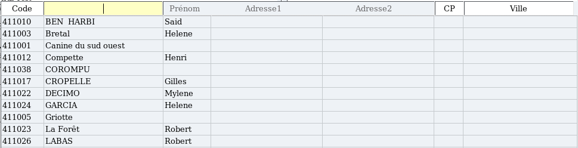

~ Laurux.Pos ~

~ Laurux.Pos ~ |
|
|
|
Gestion des clients en compte.
Il est possible avec Laurux.Pos de faire des saisies de ticket sur des clients en compte.
Cette saisie donnera lieu à l'impression d'un bon de
caisse chiffré au prix public TTC, c'est à dire que le bon de caisse ne
tiendra pas compte des conditions du client.
Le moulinage effectué en fin de journée passera
l'ensemble des bons de caisse en facturation. Chaque bon de caisse
générera un bon de livraison comportant un libellé rappelant le numéro
du ticket et la date puis les lignes de produits incluant les
éventuelles remises du compte client. Ainsi, en fin de mois, le
client aura une facture récapitulant l'ensemble de ses opérations y
compris les tickets de caisse.
On peut activer l'option "Client en compte" soit au début du ticket soit en cours de saisie en faisant CTRL + F12
La fenêtre de recherche des clients s'ouvre pour qu'on fasse la sélection du compte.

En fin de ticket, l'activation de la touche F7 n'ouvrira pas la fenêtre des règlements mais imprimera directement le bon de caisse.
----------------------------------------------------------------------------------------------------------------------